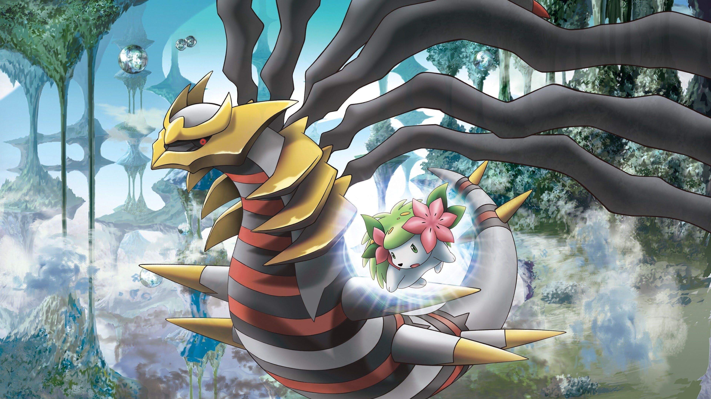
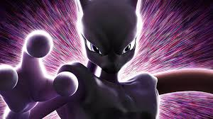
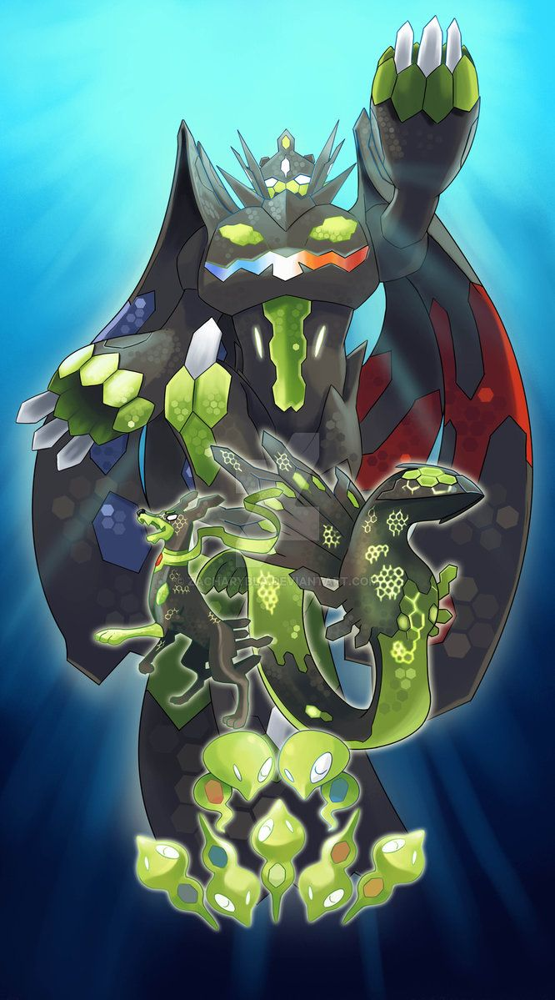

Please know these are a personal opinion and do not get offended.
5. Girantina
Giratina is Top 5 due to its control over antimatter and it being a dragon and ghost type. It is one of the three dragons created directly from Arceus.

4. Mewtwo
Mewtwo is Top 4 because of its connection to Mew, which means it posseses the strengths of Mew and has Mew DNA.

3. Mew
Mew is Top 3 because it is said to have the dna of every pokemon.
2. Zygarde
Zygarde's ability to create balance in nature along with it's ability to mutiply makes it incredibly versitile, hostile and hard to defeat.

1. Arceus
Arceus is considered the strongest Pokemon because it created all Pokemon. It has plates which allow it to change its battle type as well as being the god of pokemon.